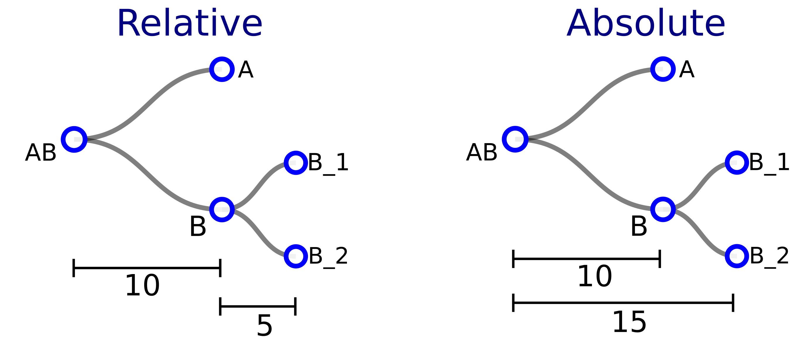

CeLaVi (after Cell Lineage Visualisation
tool), is a web-server based visualisation tool
that allows any user to interrogate interactively the cell
lineage of an organism or population of cells whilst visualising
its spatial context and identity of the cells.
CeLaVi is built using HTML5, Ajax, jQuery, CSS and the
visualisation libraries D3.js and Plotly.js. It does not need to
be installed and has been tested on the following browsers and
OS:
| OS | Version | Chrome | Firefox | Safari |
| Linux | Ubuntu 16.04 | 87.0.4280 | 83.0 | n/a |
| MacOS | 10.15.2 | 87.0.4280 | 83.0 | 13.1.2 |
| Windows | 10 | 87.0.4280 | 83.0 | n/a |
To visualize a Cell Lineage Tree and relate it to a 3D cell map, the user needs to provide two files: 1) Cell lineage tree file and 2) 3D coordinates file. Below we explain how to upload these files and what is the specific format for each.
The tree file needs to be uploaded either in Newick or Json format.
To upload a tree file, click the "Upload tree (select format)" box and
choose the file to upload. If the selected file has a correct
extension, i.e. “.nw” or “.newick” for newick or “.json” for json
files, the tree will automatically be shown.
For lineage tree files containing branch length information (timing of
cell divisions) a dialog box will appear allowing the user to specify
how branch lengths should be plotted: if branch lengths represent time
to the parent node the user should write "relative" in the dialog box
and then click on “OK”. If they represent time from the root, then the
user needs to write "absolute" and then click “OK”. If the user clicks
on “Cancel” instead, branch lengths will be ignored.
For more details on the structure of the input files please download
the Test Files.
Below we show in a schematic diagram how the same tree would be encoded
in a json file usign either the "relative" or "absolute" mode. After
selecting the approapriate mode, the tree depicted is the same.

The file containing the 3D coordinates of the cells must contain a table in comma- separated-value (csv) format. The first line is a header or descriptor line, which specifies the column’s identity as “cell”, “X”, “Y”, and “Z”. Each subsequent line corresponds to one cell. The first column contains the cell ID, and the next columns are the three coordinate values (X,Y and Z, respectively).
There is an option to store the data source metadata in both the lineage
tree and 3D coordinates files. If a file contains this metadata, the source
information will be displayed at the bottom of the corresponding viewer,
like in the example datasets. Below we describe how to add the data source to
the files.
{"species”:“xxx”, “source”:”yyy”,
where “xxx” is the name of the species, and “yyy” the source information to display. Take care of including a comma after the source name, as indicated in the example below:{"species":"NA (In silico organoid)","source":"Germann et al (2019). doi:10.1016/J.CELS.2019.02.007",
[Species:xxx];
[Source:yyy];
[Species: Ciona intestinalis];
[Source: Manually created based on Conklin nomenclature (Conklin EG, 1905)];
[Source: xxxxx]
Where "xxx" is the text describing the source, as in the example header below:clone,cell,X,Y,Z,[Source: Germann et al (2019). doi:10.1016/J.CELS.2019.02.007]
Open input files
By default, any cell in the tree is labeled either in blue or white, representing one of two states: a "collapsed" state (labeled in blue), in which its daughter cells are hidden, or an "expanded" state (labeled in white), in which its daughter cells are shown. Terminal cells in the tree do not have daughters, and are by definition in the "expanded" state. When a cell lineage tree is uploaded, by default the tree is shown as completely expanded.
In order to switch between the "collapsed" (blue) and "expanded" (white) states of an internal node, right-click on the node and select “Collapse node [node ID]”/ “Expand node [node ID]”. This will expand just the daughters of the node in question.
To collapse or expand all the descendants of a node (daughters, granddaughters etc.), right-click on the node and select “Collapse all until here”/ “Expand all from here”.
This is an option to expand/collapse daughters of many cells at once
by using the "Tree depth" section below the cell lineage. When loading
a tree, CeLaVi displays the different depths of the tree as purple
circles in the "Tree depth" section. These circles, as well as showing
the number of depth levels, can be used to collapse/expand all the
cells at a given tree depth: click the depth level of interest, select
the option "Collapse all cells" or "Expand all cells".
Please note that the tree levels are defined in ascending order,
starting with the root at level 0, the daughters of the root as level
1, and so on.
It is possible to delete nodes in the Lineage tree, which can be
useful when dealing with lineage trees with thousands of cells or when
the user wants to focus on a specific clone.
If the user wants to delete a specific node, it can be done by right
clicking on that node and select the option “Delete this node” from
the menu.
There is also the option to delete multiple nodes, from a given tree
depth, that have fewer descendants than a desired threshold. For this,
click on the desired tree depth (in the Tree depth section at the
bottom of the lineage viewer) and select the option “Delete nodes with
fewer than N descendants”. This will prompt an input box where the
user needs to enter an integer number and to click “OK” for
confirmation. The entered number will specify the number of
descendants to be used as a threshold.
Importantly, the pruning of the tree does not affect the original
input file, so the user can restart by loading again the lineage file.
It is possible that, when loading a dataset, the user finds there are
more terminal cells in the Lineage tree than cells in the 3D viewer,
producing a mismatch between both visualisations. To account for this,
the user can collapse all the cells that are not found in the 3D
viewer by clicking on “Collapse extra cells” in the “Other options”
dropdown menu. This function collapses all internal nodes whose
terminal leaves are not found in the 3D viewer area. Terminal cells in
the lineage tree that are not found and cannot be collapsed are
painted gray.
If the user wants to delete the extra cells from the tree completely (and not just collapsing them like above) the “Delete extra cells option” can be used. This function deletes all the both the internal nodes whose terminal cells are not found in the 3D viewer area and terminal cells that cannot be found in the 3D viewer. The pruning of the tree does not affect the original input file, so the user can restart by loading again the lineage file.
The button “Reset view” at the bottom of the Lineage viewer resets the Lineage tree to the initial visualisation, i.e. all nodes expanded and with the tree centered in the lineage viewer). This function does not recover the deleted nodes on the tree. If some nodes have been deleted from the tree by the user, the lineage tree needs to be loaded again (selecting it again as input file) to recover the deleted nodes.
Rendering a lineage tree with thousands of cells can be
computationally intensive on the client side (user’s computer).
Although the maximum number of cells and cell lineage nodes
that can be visualised without experiencing delays would depend
on the client computer, we have noted that CeLaVi typically becomes
less responsive when more than 10,000 cells are loaded.
In order to reduce the computational burden of dealing with such trees,
CeLaVi has an option to plot only some of the branches of the tree,
which is automatically selected when the number of cells is greater
than 500. This function is only relevant, however, when the lineage
tree is not completely resolved, i.e. some internal nodes have more
than 2 daughters (polytomies). This is a common case in clonal
analyses, where cells are grouped in clones but the inter-clonal
relationships are not resolved.
When the “Render only some branches” is selected, only the first and
last branches are plotted in each polytomy, potentially reducing
massively the amount of lines that need to be plotted (see
video of this function with the organoid example). This
option can be changed by the user by clicking on “Render all
branches”.
Another way of increasing the respo esponsiveness of the Lineage
viewer is to reduce the number of elements displayed in the Lineage
viewer, for example by showing only the root node label (click on
the “0” Tree depth level and selecting “Show label until this depth”)
or by collapsing non-relevant nodes in the tree. Also, if the user
is interested in a specific clone, it is possible to export the clone
as a JSON file (see “Exporting a clone to a JSON file” section).
This file can be loaded and visualised subsequently in CeLaVi, with
the original coordinates and annotation files.
Collapse/Expand tree
Tree depth
Delete extra cells
Render all/some branches
The 3D visualisation is implemented using the 3D scatterplot function of plotly.js, a visualisation library based on d3.js and stack.gl For more information on the plotly.js visualisation library visit https://plot.ly/javascript/.
When a file of 3D cell locations has been uploaded, the positions of all cells are shown in the 3D viewer on the right hand side of the screen. It is possible to Zoom in/out by using the scroll wheel of the mouse, to rotate by left-clicking and dragging, and to pan the 3D scatterplot by right-clicking and dragging the mouse.
The user can modify some features of the 3D viewer area using the "3D
cell controls" panel, located in the bottom right of the 3D viewer
area.
On the left, the "Reset colors" button resets the colour of the cells
in both the lineage and 3D viewer to the default (light grey). The
“Reset clones” button deletes the saved list of clones.
The size of the cells can be modified using the “Cell size” input box
either by changing the size of the cells in a stepwise manner using
the arrow buttons or by typing an integer value.
There are also 2 checkboxes in this section: 1) The “Show Axes”
checkbox allows the user to show or hide the 3D axes plotted in the
background. 2) The “Show lineage” option allows the user to visualise
the degree of lineage relationship for each of the cells relative to a
selected cell. Every cell is coloured using a heatmap that shows how
closely related each cell is to the selected cell. To do this, select
the “show lineage” option by clicking on the checkbox and then click
on any cell in the 3D viewer area.
An important feature of CeLaVi is the possibility of interactively
interrogating the data. One useful function is to highlight the
developmental lineage of any cell chosen in the 3D visualisation area.
Clicking on any cell in the 3D visualisation will change its colour to
red and its lineage will be highlighted in red on the lineage tree.
More specifically, the cell that has been clicked will be coloured in
red as will all its ancestors down to the root. Note: To do this, the
lineage tree (or at least the clade of the cell to be highlighted)
needs to be completely expanded.
Note: To do this, the lineage tree (or at least the clade of the cell
to be highlighted) needs to be completely expanded.
In the case a 3D cells file is loaded and it contains more cells than found in the Lineage tree, a warning message will be shown specifying the number of cells that were not found in the tree. The “missing” cells will be plotted on the 3D viewer but without a fill colour, making them easily identifiable. The user can then hide/show these cells on the 3D viewer by clicking on the “Cells missing in tree” legend at the top right of the 3D viewer (see video).
Interacting with cells in the 3D viewer
There are two ways to visualise the spatial distribution of all the
descendants of a given cell in the cell lineage. The first is simply
by clicking on any cell in the Lineage tree. This will mark all the
descendant cells on the 3D visualisation section by assigning them a
random colour. With this option we can mark multiple clones at the
same time.
Another option is to hover the cursor over any cell in the lineage
tree. In this case, all cells that do not belong to the selected clone
will be faded out in the 3D viewer whilst the mouse cursor is on the
ancestral cell of interest. This function only allows visualisation of
one clone at a time.
The accompanying video shows both options for highlighting a single clone
in the 3D cell section and how to interact with the 3D plot.
It is possible to mark all the clones at a given tree depth by interacting with the "Tree depth" section below the Lineage Tree. In the accompanying video this function is shown using the Parhyale dataset. Clicking on the depth level 1 circle we can then select the option "Show clones from this depth". This marks the spatial distribution of the 20 clones that comprise this dataset. We can also use this option to see how a clone gets divided into subclones in the subsequent cell divisions. For this we need to expand only the clone(s) we are interested in following, and then select the option "Show clones from this depth" for increasing depths.
When the Cell Lineage file contains branch length information (which essentially represents the timing of cell divisions), it is also possible to show all the clones originating at a given time point. To do this, first click the box "Branch Len" to change the representation of the Lineage tree so that it shows branch lengths. The "Tree depth" section at the bottom of the Lineage Tree will change from showing the tree depths (purple circles) to showing an horizontal slider. The horizontal slider represents developmental time (from 0 to 100%) and can be clicked to show the clones originating at different time points. A vertical dashed line is plotted on top of the Lineage Tree showing the selected level. It is also possible to expand only those clones in the lineage tree that the user wants to visualise. The following video shows how to visualise clones at a given tree depth or at a given time point.
If the user is interested in one or several specific clones, it is possible to save these as a list that can be used to visualise them later. In the Lineage tree we right-click on the tree node (parent cell) of interest and select the option "Save clone [cell ID]". A colour picker will be displayed allowing the user to choose the colour of the cells of this clone when selected. After choosing the colour and clicking “OK” in the colour picker box, the ID of the cell will be saved into a list that can be displayed by clicking on the button "Saved clones". We can recall a saved clone by clicking on its identity in this list. The cells of the selected clone will then be highlighted by its chosen colour. It is possible to delete the saved list of clones by clicking on the “Reset Clones” button.
It is possible to export the saved list of clones as a csv file. This
csv file can be loaded as a “cell annotations file” to visualise the
clones in another CeLaVi session, or to share the clones' list with
other people.
For more information on cell annotations file see the section below.
The video shows how to save clones, how to select them from the
list to display them and how to export them as a cell annotations
file.
With this function, it is possible to export the complete lineage
information of any selected clone (all tree levels, not only the
final time point), together with the cell IDs and branch lengths
of all the descendants, as a JSON file in the user's computer.
This file can be loaded and visualised subsequently in CeLaVi, with
the original coordinates and annotation files.
This feature is useful for users that want to focus on, or easily
share, a specific clone.
The accompanying video shows the exporting of the EMS lineage
in C. elegans.
Note that when loading a 3D coordinates file again, the cells that
are missing are shown only with a blue outline. The user can hide these
cells by clicking on the box "Cells missing in tree" on the right top
of the 3D viewer".
Showing a single clone
Showing various clones
Saving clones
Apart from the cell lineage and spatial distribution of the cells, it is possible to visualise additional information, e.g. cell type.
To upload a file, click on the “Cell annotations file” input box and select the file from your computer. The file needs to be a csv file with 2 columns. The first column should have the cell ID (which must be identical to its entry in the 3D coordinates file), and the second column will show the cell annotation the user wants to visualise, as cell type (e.g. neuron). If the file format is correct, a table will display containing all cell type annotations as coloured rows.
The cell annotations table serves for interactively visualising the different sets of annotated cells in the 3D viewer and the lineage tree. The video shows how it works with the Ciona gastrula dataset example. Here, the cell annotations correspond to the different cell types (or fates) in the gastrula. When hovering over a table row, the cells that belong to that cell type are highlighted by fading out the rest of the cells. If the row is clicked, the cells in both the 3D viewer and the lineage viewer are painted with the colour matching the background colour of the row that has been clicked.
Cell annotations
An additional feature of CeLaVi is the possibility of visualising gene expression information. Such information can have been generated by different technologies, like single cell sequencing or in situ sequencing.
The gene expression file needs to be a csv file with genes as rows and
cells as columns and it needs to contain a header with the format
“gene,cell_01,cell_02,cell_03”.
As with the cell annotations file, the
cell ID must be identical to the cell IDs used in both the 3D cells
and lineage tree files.
After successful loading of the gene expression file, a gene search box will appear above the 3D viewer. To plot the expression of a gene of interest, type its name in the search box and click on the “submit” button. The search box has an autofill function, so a list of genes starting with the letter(s) initially entered will display when typing the name of a gene of interest. The gene expression values will be represented on the 3D and lineage viewers using a heatmap. The heatmap scale (level of expression) will be plotted at the bottom of the 3D viewer area. The accompanying video shows how to upload and visualise gene expression data using the Ciona gastrula example dataset.
The gene expression highlighting option can be used to plot any other
quantitative feature associated with the cells (UMI, mitochondrial gene
expression, etc). For this, the user just needs to upload a file with the
same format as a the gene expression file.
The quantitative information file needs to be a csv file with the features
to display as rows and cells as columns, and it needs to contain a header
with the format “gene,cell_01,cell_02,cell_03” with the cell ID identical
to the cell IDs used in both the 3D cells and lineage tree files.
After successful loading of the custom quantitative data file, use the gene
search box that will appear above the 3D viewer.
To plot the quantitative feature of interest, type its name in the gene
search box and click on the “submit” button.
The quantitative information (i.e. UMIs) will be represented on the 3D
and lineage viewers using a heatmap.
The heatmap scale (level of expression) will be plotted at the bottom
of the 3D viewer area.
Gene expression
At any point, the lineage tree displayed in the lineage viewer can be exported as an image in SVG or PNG format. To do this, select the desired image format from the dropdown menu shown when hovering on the button “Save Image” at the bottom of the lineage viewer.
As with the lineage tree, the 3D cells can be exported at any time as a PNG image. To do this, select the PNG option from the dropdown menu shown when hovering over the button “Save Image” at the bottom of the 3D viewer.
The embryonic cell lineage of the nematode C. elegans was described by
John Sulston and collaborators in 1983[1].
The data used for the cell lineage and the cell types were extracted from a
json file available made available by Nikhil Bhatla at
wormweb.org/celllineage
The 3D coordinates come from the study of Fuhui Long and
collaborators[2], where they mapped 357 cells (out of the 558
cells) of the L1 larval stage, using confocal image stacks of 15
individual worms.
The cell lineage of the ascidian Ciona intestinalis was described by
Edward Conklin in 1905[3]. The cell lineage file (in
newick format) was created using Conklin's nomenclature, from the
zygote to the 110-cells stage.
The 3D coordinates of the Ciona gastrula were obtained from a
reconstructed 3D embryo model[4] available in the
Aniseed database[5].The 3D embryo model contains, for each
cell, a set of data points in space (point cloud) representing the
shape in 3D. To represent each cell as a single point in the 3D space
we used the calculated centroid of the point cloud of each
cell.
The gene expression dataset was obtained from the single cell
sequencing dataset by Michael Levine and collaborators[6].
We used the "expression_matrix_C110.1.tsv" raw expression data
matrix (expression levels of 15,307 genes in 1,731 cells) together
with the metadata associated file.
"C110.1.clusters.upload.rename.1.txt" that contains the cell type
identity of each cell at the early gastrula stage. We used the R
software version 3.6.3[7] with the Seurat
package version 3.1.4[8]
to calculate the 500 most variable genes and to
obtain their average expression values per cell. The gene names
correspond to human gene IDs, derived from the Ciona intestinalis
genome assembly KH2012 with NCBI Gene Model to Best Blast Hit mapping,
available in the Aniseed database. Only the gene ID with the highest
Blast e-value is shown.
The cell lineage and 3D coordinates of the limb of the crustaean
Parhyale hawaiensis were obtained by Tassos Pavlopoulos and
collaborators[9]. They imaged transgenic fluorescently-labeled
embryos with multi-view light-sheet microscopy at high spatiotemporal
resolution over several days of embryogenesis.
The cell lineage was then reconstructed with the aid of the MaMuT software.
The "organoid" dataset comes from a simulation of morphogenesis using the ya||a software[10]. The organoid is the product of a branching morphogenesis simulation with epithelium and mesenchyme (only the epithelium is used for the example). The simulation was kindly provided by Miquel Marín-Riera, coauthor of the ya||a software, and is based on the example "branching.cu" available in https://github.com/germannp/yalla.
[1] Sulston JE, Schierenberg E, White JG, Thomson JN. The
embryonic cell lineage of the nematode Caenorhabditis elegans.
Dev Biol. 1983;100(1):64-119.
doi:10.1016/0012-1606(83)90201-4
[2] Long F, Peng H, Liu X, Kim SK, Myers
E. A 3D digital atlas of C. elegans and its application to
single-cell analyses. Nat Methods. 2009;6(9):667-672.
doi:10.1038/nmeth.1366
[3] Conklin EG. The organization and
cell-lineage of the ascidian egg. J Acad Nat Sci Philadelphia.
1905;13:1-119.
[4]Tassy O, Daian F, Hudson C, Bertrand V,
Lemaire P. A quantitative approach to the study of cell shapes
and interactions during early chordate embryogenesis. Curr Biol.
2006;16(4):345-358. doi:10.1016/j.cub.2005.12.044
[5] Brozovic M, Martin C, Dantec C, et al.
ANISEED 2015: a digital framework for the comparative
developmental biology of ascidians. Nucleic Acids Res.
2016;44(D1):D808-D818. doi:10.1093/nar/gkv966
[6] Cao C, Lemaire LA, Wang W, et al.
Comprehensive single-cell transcriptome lineages of a
proto-vertebrate. Nature. 2019;571(7765):349-354.
doi:10.1038/s41586-019-1385-y
[7] R Core Team (2020). R: A language and
environment for statistical computing. R Foundation for
Statistical Computing, Vienna, Austria. URL
https://www.R-project.org/.
[8] Stuart T, Butler A, Hoffman P, et al.
Comprehensive Integration of Single-Cell Data. Cell.
2019;177(7):1888-1902.e21. doi:10.1016/j.cell.2019.05.031
[9] Wolff C, Tinevez J-Y, Pietzsch T, et al.
Multi-view light-sheet imaging and tracking with the MaMuT
software reveals the cell lineage of a direct developing
arthropod limb. Elife. 2018;7. doi:10.7554/eLife.34410
[10] Germann P, Marin-Riera M, Sharpe J.
ya||a: GPU-Powered Spheroid Models for Mesenchyme and
Epithelium. Cell Syst. 2019;8(3):261-266.e3.
doi:10.1016/J.CELS.2019.02.007
If you have any questions about CeLaVi, you want to report a
bug, or you want to provide feedback please create an "issue"
in the Github repository:
https://github.com/irepansalvador/CeLaVi/issues
Alternatively, send an email to:
irepan_salvador@hotmail.com.